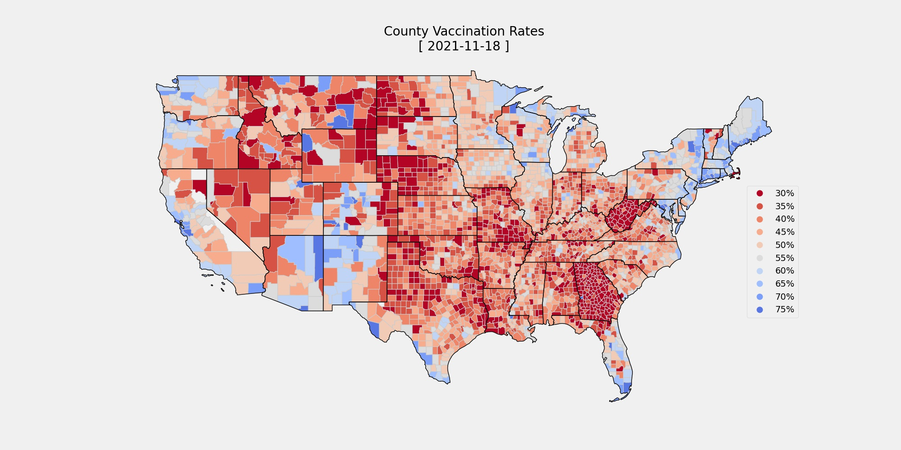
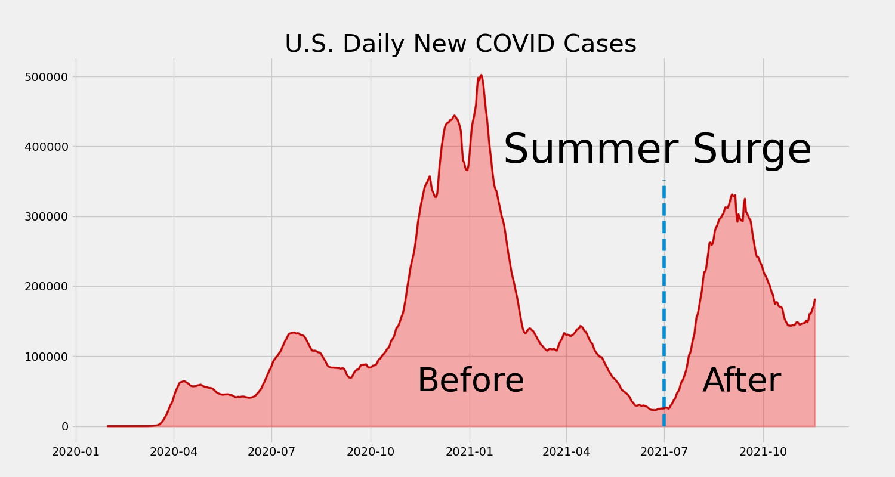

Opinions vary wildly across America and vaccines are no different. 56.4%of the country is fully vaccinated with uptake rates varying wildly across the country.What do we, as a society have to gain from vaccine mandates that infringe upon personal freedoms? Especially, when nearly half the country is opposed to the vaccine.
Let’s take a look at how we’ve fared during $$total_pandemic_days$$ days of the pandemic.
Evaluating COVIDoutcomes across our diverse and complex nation is a big challenge. COVID can be measured by its community prevalence (New COVID transmission per day). Using CDC data counties can be grouped togetherby their most current completed vaccination rates.The groups range from less than 34% to 70+%. Even though these counties are spread across the country, they all share similar vaccination rates, and they should have similar outcomes. Vaccines are just one tool to tackle COVID. It's a real challenge to measure just their statistical effect. For this analysis, COVID outcomes were compared from before and after July 1st.
The COVID surge of 2021 marks two very different phases of the pandemic. Vaccines wererolled out to the public at the end of 2020. Initially, they were hard to come by and were limited to healthcare workers and the vulnerable populations. By July 1st vaccines were available for anyone who wanted one. By looking at average daily COVID outcomesbefore and after the surge, we can estimate the effectiveness of vaccines across the entire country.
July 1st2021 is an important milestone. Case rates were in significant decline and 46.5% of the country was fully vaccinated. The country breathed a collective sigh of relief thinking the pandemic was nearly done. Subsequently, rules relaxed and the country tried to return to normal. This change in behavior combined with the more virulent Delta COVID strain that lead to a rapid and intense rise in COVID cases.
Before July 1st, 2021 COVID case rates were fairly evenly distributed across the county. New COVID cases averaged between 9,344 – 11,064 New Cases Per 100,000 People per day and similarly for deaths. COVID didn’t discriminate across the country every county was affected similarly
| County Completed Vaccination % |
Avg New Cases/100k/Day (first 511 pandemic days) |
Avg New Deaths/100k/Day (first 511 pandemic days) |
| <34% | 10,393 | 186 |
| 35% | 11,064 | 207 | 40% | 10,522 | 185 |
| 45% | 10,856 | 194 |
| 50% | 10,169 | 162 |
| 55% | 9,871 | 176 |
| 60% | 10,0871 | 85 |
| 65% | 9,344 | 187 |
| 70+% | 9,525 | 18 |
With all things being relatively equal before the pandemic, how did the country fare by vaccination rates?
Counties with 45% vaccination rates and higher fared significantly better than the others. Higher vaccinated counties reduced New COVID Cases by $$blog_case_baseline_max$$% and reduced the incidence of COVID Death by $$blog_death_baseline_max$$% That’s a big difference.
Even in you don’t believe in getting vaccinated, urge your friends, family and neighbors to. More vaccines mean less COVID and fewer COVID deaths.